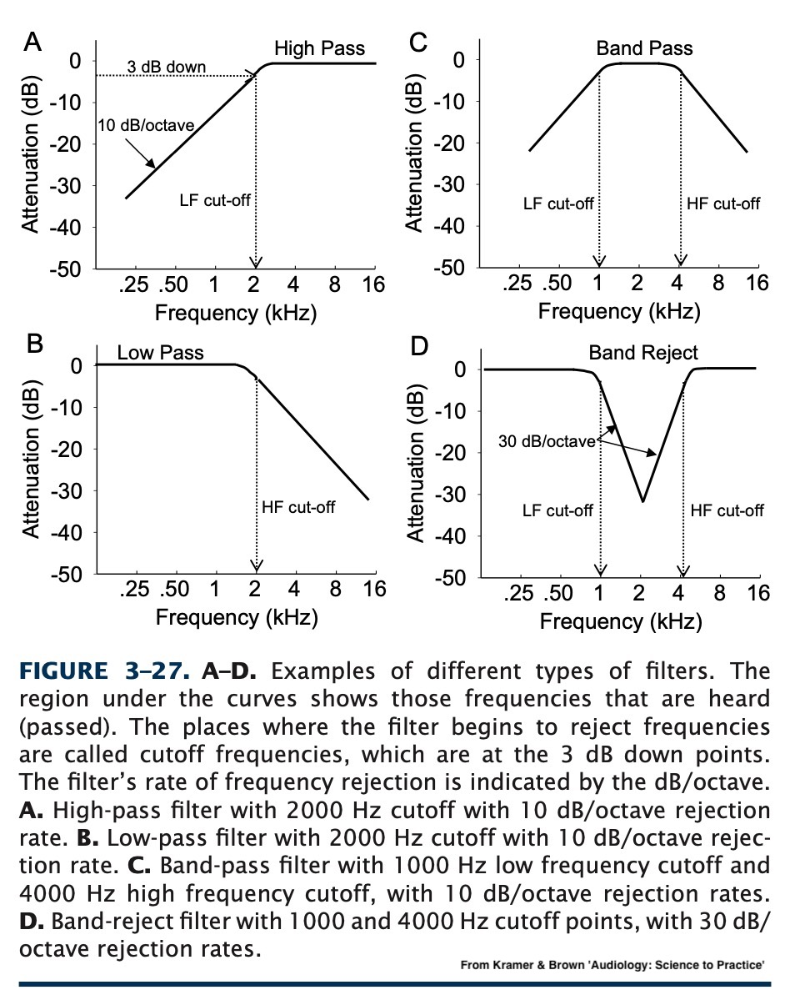
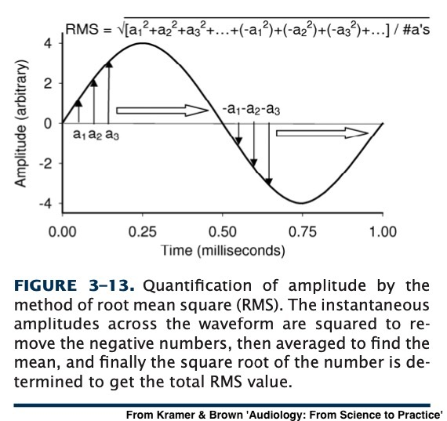
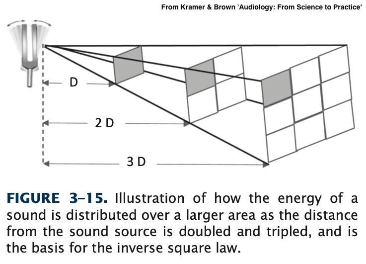
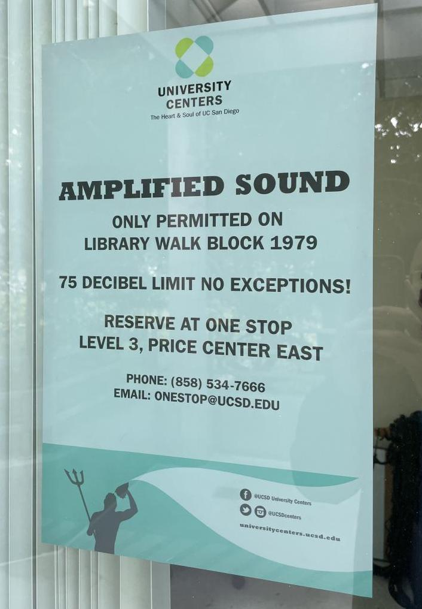
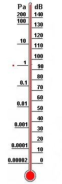

Midterm is next week!
Study guide is online, as is a sample of what the exam’s format will look like. See https://savethevowels.org/docs/l113_studyguide.html
41 questions, fill-in-the-blank and short answer, given in 50 minutes.
I reserve the right to ‘curve’ the exam or not, as seems appropriate based on the grade distribution
Filtering
Measuring Sound Pressure
Distance and Pressure
Units for measuring pressure
Decibels
Amplitude related hearing damage!
High Pass
Low Pass
Band Pass
Band Stop (also ‘Band Reject’ and ‘Notch’)
“>
They always have a ‘cutoff’ and a ‘slope’
The slope dictates how quickly sounds outside the cutoff are attenuated
There’s no such thing as a perfect filter
It’s a part of lots of hearing aids’ and CIs’ processing
We can model hearing loss by filtering
It’s a basic component of signal processing
As well as the process of combining them and modifying them
Now, how should we measure that Y-axis anyways?



Eliminates asymmetry between up and down
Takes the mean amplitude for the sound overall!
This captures the fact that sounds often vary in amplitude!

Moving the medium damps sound independently of this
Vertical differences in air temperature can ‘bend’ sound up and down
Distant sounds are quieter
You don’t feel the pressure bursts from distant fireworks
There is a ‘safe distance’ from an explosion

Anything’s safe for hearing if you’re far enough away
So, it’s critical to give amplitudes with a distance
Pascal - Newtons per square meter
Where a newton is the force required to move a kilogram 1 meter per second per second
Nothing really is
Quietest places on Earth (anechoic chambers) are ~1.9x10-6 Pascal
The quietest 1kHz sound we can hear is 2.00×10−5 Pascal
We’re humans, so we’re choosing the human audibility threshold as ‘zero’
The Planck Pressure?
The highest possible force in the smallest possible area
4.63309*10113 Pascal
In Earth’s atmosphere, the loudest possible waves are around 1.01x105 (101000) Pascal
Humans experience pain in the 200 Pascal Range
Humans experience long term hearing damage > 0.36 Pascal
200 Pascal highest tolerable sound with pain
63 Pascal for a trumpet half a meter away
20 Pascal can cause instant hearing damage
2 Pascal for a jackhammer a meter away
0.36 Pascal causes hearing damage over long term exposure
0.02 Pascal for a home TV a meter away
0.002 for conversation
0.00002 Pascal lowest detectable sound by humans

Most of the scale is used for ‘too damned loud’
Any time you’re using 0.00002, you’re going to make mistakes
Decibels are logarithmic
We’ll use dB SPL (Sound Pressure Level)
We use a reference value of 0.00002 Pascal
dB = 20*log10(Pascal/0.00002)

140dB highest tolerable sound with pain
130dB for a trumpet half a meter away
120dB can cause hearing damage instantly
100dB for a jackhammer a meter away
85dB causes hearing damage over long term exposure
60dB for a home TV a meter away
20dB for conversation
0dB lowest detectable sound by humans
-20dB Anechoic Chamber Quiet
Remember, 0 is our threshold for hearing!
180+dB can break the TM and/or dislocate the ossicles
Sounds over 132dB can rip the organ of corti off the basilar membrane
Long term high amplitude sounds damage the stereocilia and can cause cell death
< 70 dB is absolutely fine!
70-85 dB is fine in short doses < 8 hours
85+ dB has the safe exposure time cut in half per 3 dB
OSHA requires hearing protection for anything over 90 dB
Over 120dB is not safe for any amount of time
140-190dB for a gunshot, firecracker, artillery, nearby fireworks
150dB for Jet Engines and firecrackers and dynamite blasts
Over 130dB causes immediate pain!
130dB for auto racing, jackhammers
Over 120dB can cause instant hearing damage
110-120dB is thunder, stadia, chainsaws
Most rock concerts are 110-120dB!
105+ dB for unmuffled motorcycles
90-100dB is very possible with headphones and background noise
80-90dB is common on busy streets and in subways
Restaurants can easily reach 90dB
85dB can cause damage with long-term exposure
In San Diego…
California limits motorcycles to 80dB (modern) and 92dB (pre-1970)
California law limits vehicle noise to 95dB
Both motorcycles and cars are measured at 50 feet from centerline of travel!
This presentation does not constitute legal advice
When information indicates that any employee’s exposure may equal or exceed an 8-hour time-weighted average of 85 decibels, the employer shall develop and implement a monitoring program.
The employer shall establish and maintain an audiometric testing program as provided in this paragraph by making audiometric testing available to all employees whose exposures equal or exceed an 8-hour time-weighted average of 85 decibels.
Employers shall make hearing protectors available to all employees exposed to an 8-hour time-weighted average of 85 decibels or greater at no cost to the employees. Hearing protectors shall be replaced as necessary.
If you work in a loud setting, ask about the hearing plan
Use noise reducing earplugs at concerts
When you’re up against serious noise, double up
Earmuff style over foam plugs is more effective still!
Remember that electronic earmuffs are a thing
There is so much hearing damage in movies
Seriously, do not fire guns in enclosed spaces without hearing protection
We’d said that 0dB/0.00002 Pascal is the lowest detectable sound
This isn’t quite true!

‘Decibels of Hearing Loss’
0 dB HL is the normal hearing threshold at a given frequency
| .tg {border-collapse:collapse;border-spacing:0;} |
| .tg td{border-color:black;border-style:solid;border-width:1px;font-family:Arial, sans-serif;font-size:14px; |
| overflow:hidden;padding:10px 5px;word-break:normal;} |
| .tg th{border-color:black;border-style:solid;border-width:1px;font-family:Arial, sans-serif;font-size:14px; |
| font-weight:normal;overflow:hidden;padding:10px 5px;word-break:normal;} |
| .tg .tg-0pky{border-color:inherit;text-align:left;vertical-align:top} |
We wouldn’t want ‘normal’ to look like a weird curvy line
This way, hearing loss is expressed in terms of ‘relative to normal hearing’

The book goes deeper into the math of dB than I’m going to here